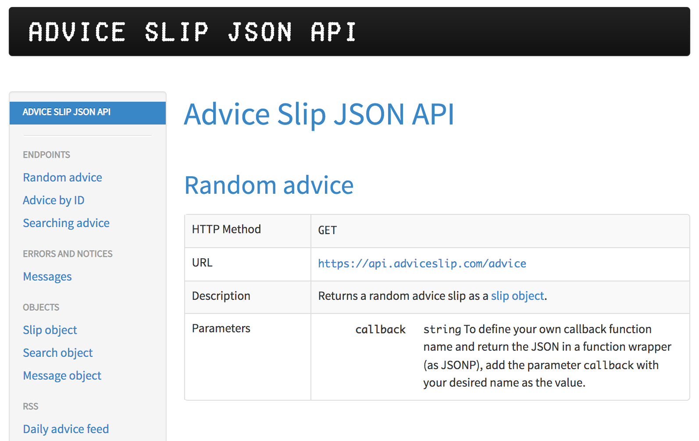
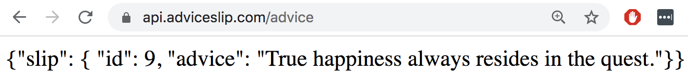
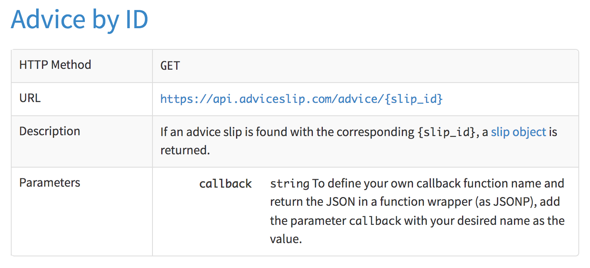
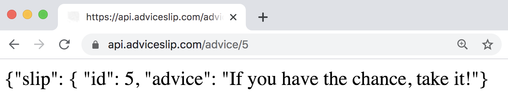
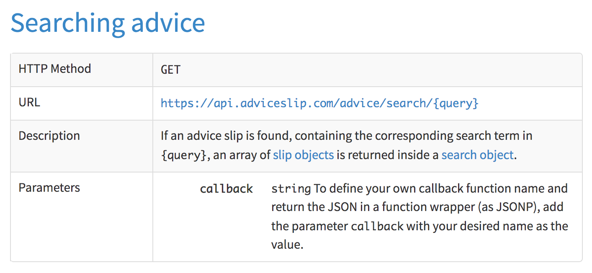
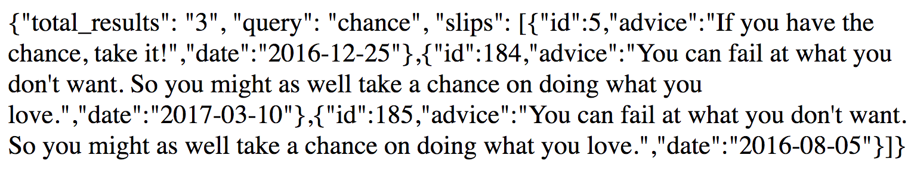

library(httr2)
library(xml2)
library(jsonlite)10 Web APIs
In this chapter we’ll give you a crash introduction to Web APIs, and how to use R for interacting with them.
You will need the following packages
10.1 Introduction
So far we’ve been dealing with data sets in various formats: internal data objects in R (e.g. data tibble starwars), built-in data frames such as mtcars or oldfaithful), reading files stored in your computer (txt, csv, tsv, etc). But you also need to learn how to get data from the web.
For better or worse, reading data from the Web entails a whole other set of considerations. Because of the large variety of data formats available in the Web, we will primarily focus on retrieving data from Application Programming Interfaces also known as APIs.
The reason to focus on APIs is because nowadays many companies, websites, sources, etc. use APIs as their primary means to share information and data. Many large websites like Reddit, Twitter and Facebook offer APIs so that data analysts and data scientists can access interesting data. And having an API to share data has become a standard thing to have.
10.2 A little bit about APIs
API stands for Application Programming Interface. If this sounds too fancy or cryptic for you, then simply think of it as a “Data Sharing Interface”.
Instead of having to download a data file, an API allows programmers to request data directly from a website. From a technical point of view, an API is a set of rules, protocols, and tools for building software and applications.
What is an API?
“API” is a general term for the place where one computer program (the client) interacts with another (the server), or with itself.
APIs offer data scientists a polished way to request clean and curated data from a website. When a website like Facebook sets up an API, they are essentially setting up a computer that waits for data requests.
Once this computer receives a data request, it will do its own processing of the data and send it to the computer that requested it. From our perspective as the requester, we will need to write code in R that creates the request and tells the computer running the API what we need. That computer will then read our code, process the request, and return nicely-formatted data that can be easily parsed by existing R libraries.
Why to use an API?
Why is this valuable? Contrast the API approach to pure web scraping. When a programmer scrapes a web page, they receive the data in a messy chunk of HTML. While there are certainly libraries out there that make parsing HTML text easy, these are all cleaning steps that need to be taken before we even get our hands on the data we want!
Often, we can immediately use the data we get from an API, which saves us time and frustration.
10.3 Using R as an HTTP Client
R has a few HTTP client packages: "crul", "curl", "httr2", and "RCurl"; you can think of them as “high-level R HTTP clients” which basically let you use R (and your computer) as an HTTP client.
We will describe how to use functions from "httr2" (pronounced hitter2).
10.4 Interacting with AP’s via R
In R, we can use the "httr2" package to make http requests and handle the responses.
Let’s start with baby steps using the website https://api.adviceslip.com/ which provides an API—developed by Tom Kiss—to get a free piece of advice from the internet.
The first thing you need to do is to look at the adviceslip website to familiarize yourself with the functionalities it provides.

The url https://api.adviceslip.com/advice will give you a random advice, for example:

Notice that the format of the response is provided in JSON format. In the above example, the advice content is given as:
{"slip": {"id": 9, "advice": "True happiness always resides in the quest."}}which we can mentally rearrange as:
{
"slip": {
"id": 9,
"advice": "True happiness always resides in the quest."
}
}Getting a random advice is quite simple, all you need is to make an HTTP request using the url https://api.adviceslip.com/advice.
10.4.1 Making request from R
Interestingly, we can make such request from R, using it as a server. This requires employing some functions from "httr2".
In "httr2", you start by creating a request. How? You use the request() function which creates a request object. To be clear, request() does not submit the request, it only creates the object, which you can use to build up a complex request piece by piece, and works well with the pipe operators |> or %>%.
# start a request object
advice_url = "https://api.adviceslip.com"
req = request(advice_url)
req<httr2_request>GET https://api.adviceslip.comBody: emptyTo see what this request will send to the server we perform a dry run:
req |> req_dry_run()GET / HTTP/1.1
Host: api.adviceslip.com
User-Agent: httr2/1.0.0 r-curl/5.1.0 libcurl/7.79.1
Accept: */*
Accept-Encoding: deflate, gzipWhat’s going on with the first line GET / HTTP/1.1?
The first term,
GET, refers to the HTTP method, which is a verb that tells the server what you want to do. In this case isGET, the most common verb, indicating that we want to get a resource. Other verbs includePOST, to create a new resource;PUT, to replace an existing resource; andDELETE, to delete a resource.The second part,
/, is the path which is the URL stripped of details that the server already knows, i.e. the protocol (http or https), and the host (localhost).The third element,
HTTP/1.1, is the version of the HTTP protocol. This is unimportant for our purposes because it’s handled at a lower level.
In order to make a request with "httr2", we need to complete the full path of the URL. In the above example, this is done with req_url_path_append()
# then we complete the full path
req |>
req_url_path_append("advice") <httr2_request>GET https://api.adviceslip.com/adviceBody: emptyObserve that the output of this command has the full path of the request: https://api.adviceslip.com/advice.
10.4.2 Performing a Request
Once we have the desired request object, then we can submit it or perform such request with req_perform():
# then add on the query path
resp = req |>
req_url_path_append("advice") |>
req_perform()
resp
#> <httr2_response>
#> GET https://api.adviceslip.com/advice
#> Status: 200 OK
#> Content-Type: text/html
#> Body: In memory (77 bytes)As you can tell, the response has a success status (200 OK), and the fetched content is text in html format.
The object resp is an object of class "httr2_response", which is basically an R list that contains 7 elements:
names(resp)
#> [1] "method" "url" "status_code" "headers" "body"
#> [6] "request" "cache" One of the elements in resp is "body" which is the element that is supposed to contain the response content. If we take a look at the body we get an interesting—but unhelpful—output:
resp$body
#> [1] 7b 22 73 6c 69 70 22 3a 20 7b 20 22 69 64 22 3a 20 39 2c 20 22 61 64 76
#> [25] 69 63 65 22 3a 20 22 54 72 75 65 20 68 61 70 70 69 6e 65 73 73 20 61 6c
#> [49] 77 61 79 73 20 72 65 73 69 64 65 73 20 69 6e 20 74 68 65 20 71 75 65 73
#> [73] 74 2e 22 7d 7dWhat kind of object is resp$body? Inspecting its class(), it turns out that this is an object of class "raw" or raw vector, which is a vector that holds raw bytes in R.
class(resp$body)
#> [1] "raw"Technically speaking, a raw vector is printed with each byte separately represented as a pair of hex digits. If you want to see a character representation (with escape sequences for non-printing characters) use rawToChar().
body_json = rawToChar(resp$body)
body_json
#> [1] "{\"slip\": { \"id\": 9, \"advice\": \"True happiness always resides in the quest.\"}}"Converting the raw vector into text, we obtain the response body body_json which is text in JSON format. Then, to parse this JSON text, we use fromJSON() which returns an R list:
slip_advice = fromJSON(body_json)
slip_advice
#> $slip
#> $slip$id
#> [1] 9
#> $slip$advice
#> [1] "True happiness always resides in the quest."And finally, we extract the piece of advice as follows:
slip_advice$slip$advice
#> [1] "True happiness always resides in the quest."10.4.3 Extracting response as string
Let me show you another—more straightforward—way to extract the content of the response body by using one of the resp_body_() functions, in particular the resp_body_string() function:
resp |> resp_body_string()
#> [1] "{\"slip\": { \"id\": 9, \"advice\": \"True happiness always resides in the quest.\"}}"Notice that we obtain the same JSON text, which we can parse with fromJSON()
resp |> resp_body_string() |> fromJSON()
#> $slip
#> $slip$id
#> [1] 9
#> $slip$advice
#> [1] "True happiness always resides in the quest."10.4.4 Extracting response as HTML
A third equivalent method to extract the response body is with the function resp_body_html(). The reason why we can do that in this case has to do with the fact that the content of the response is in HTML format: Content-Type: text/html.
# the result "resp" comes back as html
# Let's extract body from response
doc_html = resp |> resp_body_html()
doc_html
#> {html_document}
#> <html>
#> [1] <body><p>{"slip": { "id": 9, "advice": "True happiness always resides ...Since the output is an html_document, we first need to extract the text of the <p> element. One option to achieve this is with an xpath expression:
txt_json = doc_html |>
xml_find_all(xpath = "//p") |>
xml_text()
txt_json
#> [1] "{\"slip\": { \"id\": 9, \"advice\": \"True happiness always resides in the quest.\"}}"This still requires some JSON parsing with fromJSON():
slip_advice = fromJSON(txt_json)
slip_advice
#> $slip
#> $slip$id
#> [1] 9
#> $slip$advice
#> [1] "True happiness always resides in the quest."10.5 Example: Search with Advice ID
The Advice Slip API also allows you to request an advice based on its ID.

For example, the id = 5 results in the following advice:

To make this request from R, we create the request object, and then perform such request
# advice id=5
resp_advice_id5 <- req |>
req_url_path_append("advice/5") |>
req_perform()
resp_advice_id5
#> <httr2_response>
#> GET https://api.adviceslip.com/advice/5
#> Status: 200 OK
#> Content-Type: text/html
#> Body: In memory (66 bytes)We can then extract the response body, for instance:
advice_id5 = resp_advice_id5 |> resp_body_string() |> fromJSON()
advice_id5
#> $slip
#> $slip$id
#> [1] 5
#> $slip$advice
#> [1] "If you have the chance, take it!"10.6 Example: Search Query
Another kind of request that you can do with the Advice Slip API is to search for an advice specifying a search query:

For example, say we are interested in searching for advice that includes the word chance. The corresponding URL path will have the following form:
https://api.adviceslip.com/advice/search/chance
And the resulting output looks like this:

Let’s create a request that searches for the term chance. For sake of illustration, let’s build a request object by appending the path elements: advice, search, and chance
# advice id=5
resp_advice_chance <- req |>
req_url_path_append("advice") |>
req_url_path_append("search") |>
req_url_path_append("chance") |>
req_perform()The above command can be shorten as:
# advice id=5
resp_advice_chance <- req |>
req_url_path_append("advice/search/chance") |>
req_perform()
resp_advice_chance
#> <httr2_response>
#> GET https://api.adviceslip.com/advice/search/chance
#> Status: 200 OK
#> Content-Type: text/html
#> Body: In memory (402 bytes)Having performed the request, we fetch the data by extracting the body as a string (in JSON format), and then parsing it with fromJSON()
advice_chance = resp_advice_chance |> resp_body_string() |> fromJSON()
names(advice_chance)
#> [1] "total_results" "query" "slips" The "slips" element contains a data frame with 3 advice recommendations (the last two are actually the same advice):
advice_chance$slips id
1 5
2 184
3 185
advice
1 If you have the chance, take it!
2 You can fail at what you don't want. So you might as well take a chance on doing what you love.
3 You can fail at what you don't want. So you might as well take a chance on doing what you love.
date
1 2016-12-25
2 2017-03-10
3 2016-08-05